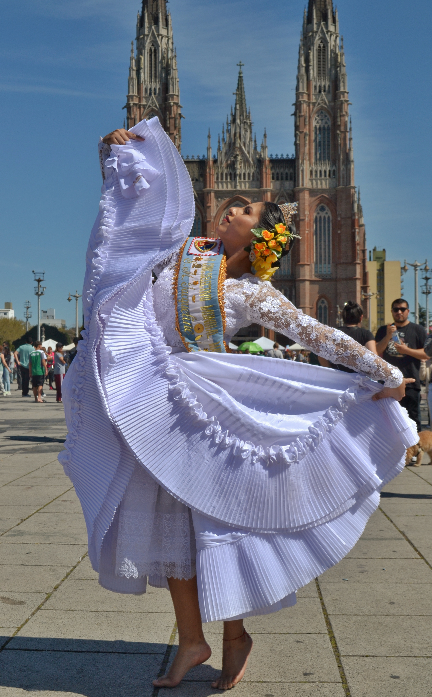
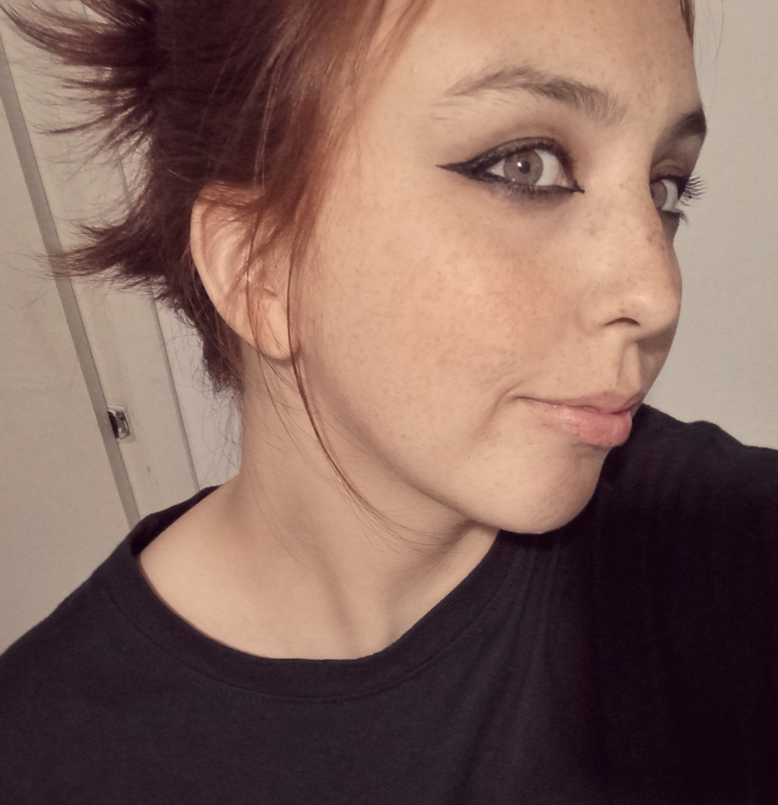
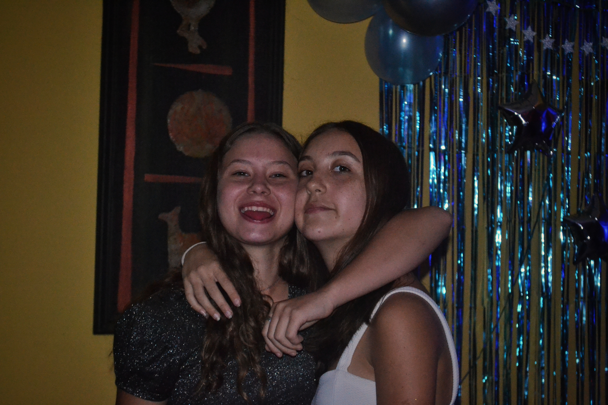
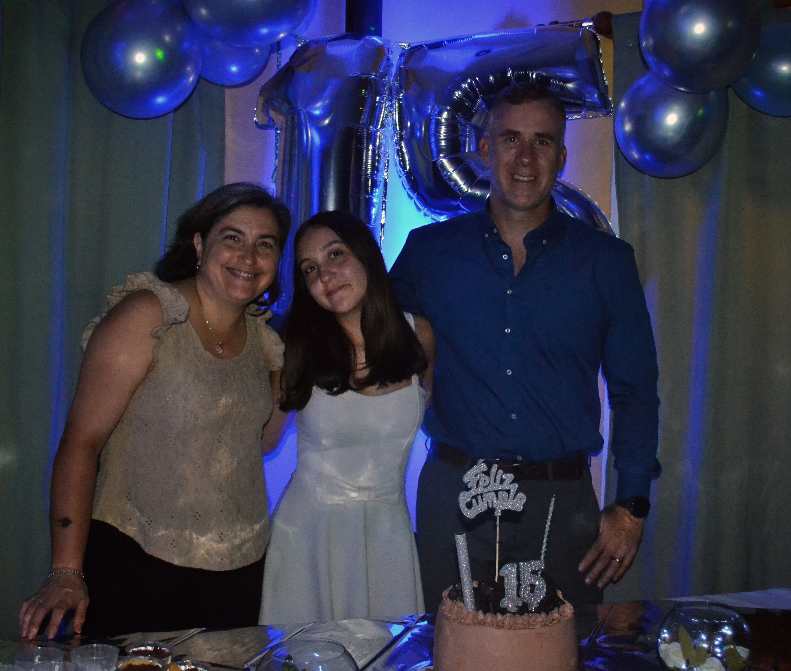
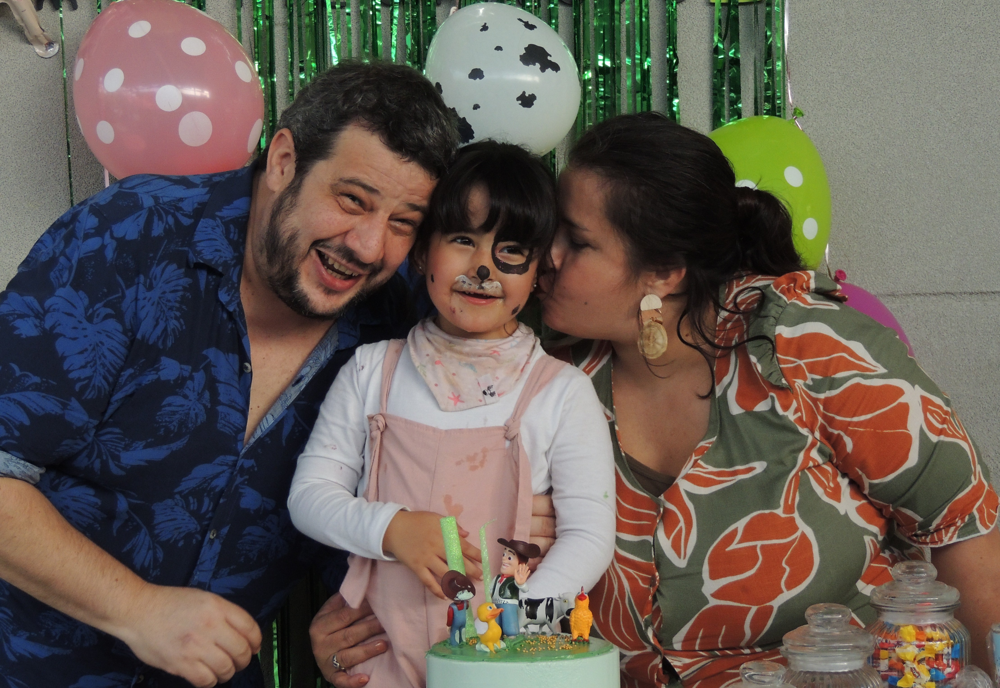
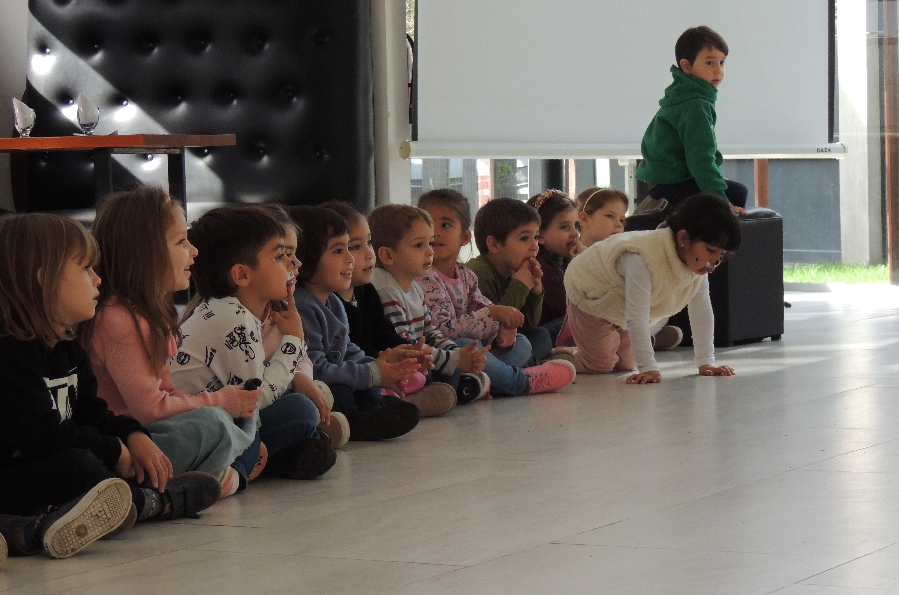
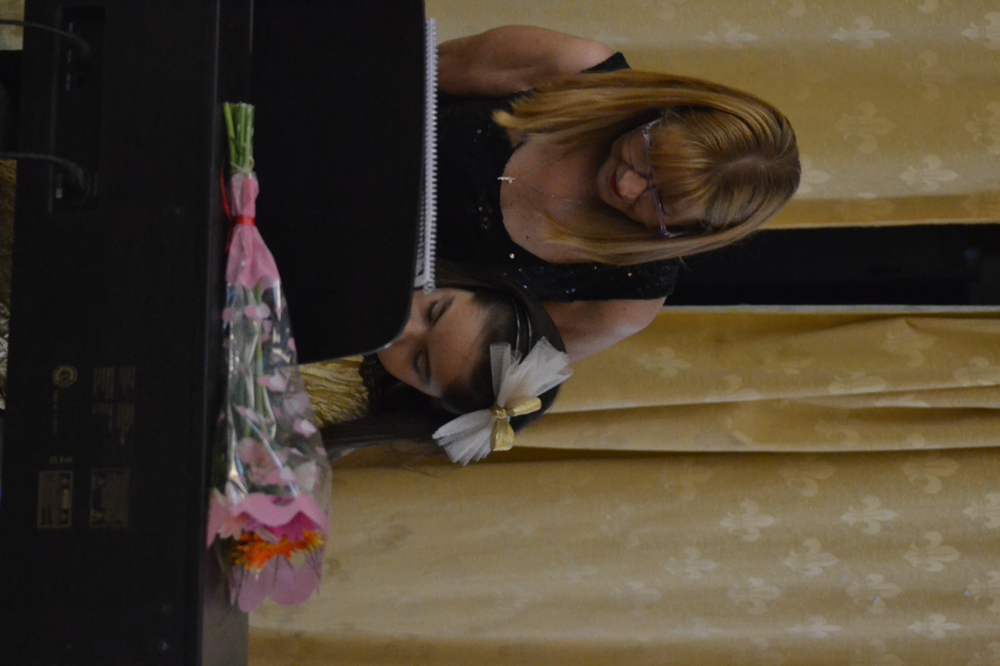
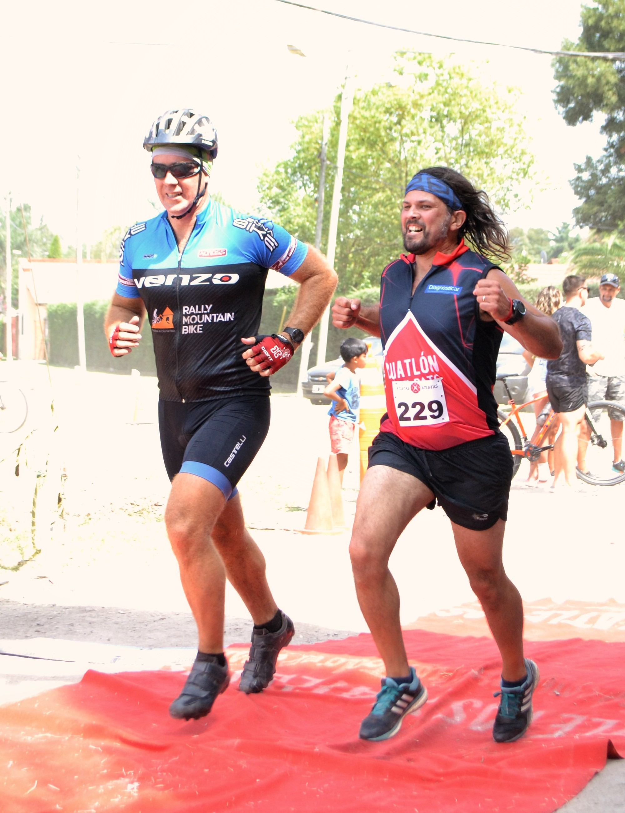
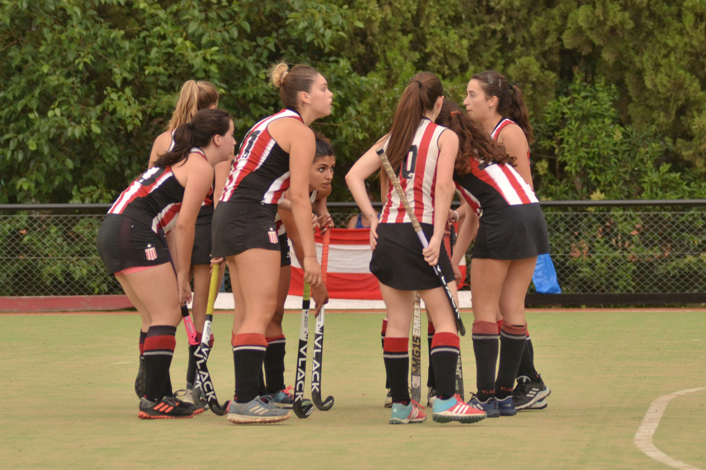

Casamientos, cumpleaños, festivales y diferentes coberturas. Capturo lo que pasa una sola vez, sin poses forzadas.


La fotografía es mi forma de detener el tiempo. Desde hace varios años me dedico a capturar momentos que merecen quedar grabados para siempre: gestos espontáneos, luces que no se repiten, instantes que de otro modo se perderían.
Construyo imágenes desde lo simple
Casamientos íntimos y civiles, capturando la emoción real sin poses forzadas.
Fiestas de 15, cumpleaños familiares e infantiles: cada edad tiene su propia energía.




Capturando el movimiento y la energía del momento.

Cobertura de torneos, actos y competencias, con foco en la emoción de cada participante.


Además de coberturas de eventos, desarrollo retratos con concepto, producciones fotográficas y proyectos personales. Los reuní en un portafolio aparte.
Cada celebración es única y merece quedar bien contada. Si estás organizando un casamiento, cumpleaños o evento, escribime y armamos juntos la cobertura.